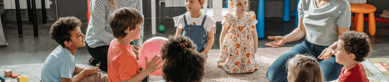
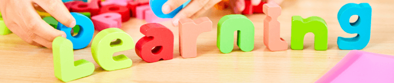

1. Enfoque comunicativo
En ELM las clases son impartidas 100% en inglés.
Los niños y niñas inmersos/as en juegos, canciones y actividades lúdicas, se comunican en inglés desde el primer día casi sin darse cuenta.
2. Método multisensorial
Los niños aprenden por medio del oído, la vista y el tacto. El aprendizaje se vuelve dinámico, significativo y duradero cuando interactúan con sus compañeros, crean, imaginan y materializan lo aprendido por medio de actividades manuales.
3. El Juego

Las clases son encuentros amenos y divertidos. El Juego surge como un recurso clave para incorporar el inglés de manera natural, a su vez que convierte al alumno en partícipe activo de su propio aprendizaje.
4. El aprendizaje es activo

Si el alumno quiere aprender, significa que se siente motivado, participa activa y plenamente en clases.
En ELM se aprovecha al máximo la capacidad y ganas de aprender innata del niño. Cada encuentro es una nueva aventura, canalizando sus energías hacia el aprendizaje de manera divertida pero eficaz.